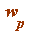
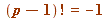
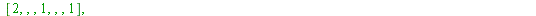
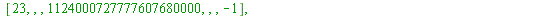
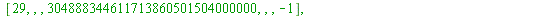
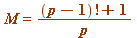
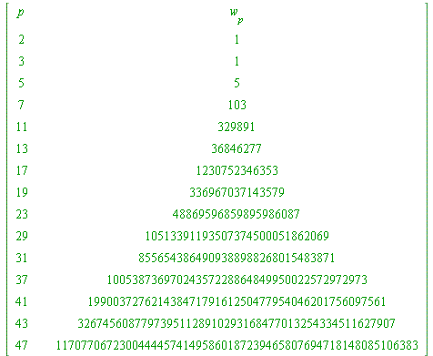

Wilson's Theorem, and introducing another standard term: the Wilson quotient, 
Wilson's (the discoverer, not the prover) theorem (around 1770). Every prime satisfies  (mod  ).
).
Remark. It was something of a surprise for me to hear you had not encountered this in your second year NT course.
| > | L := []: for p from 2 to 50 do if isprime(p) then
R||p := PRFAC(1, p-1, p, 1): ### COMPUTES THE RESIDUE OF THE FACTORIAL L := [op(L), p]: fi od: print(``); print(array([ ['p', ``, ``, '(p-1)!', ``, ``, 'residue'], seq([p, ``, ``, (p-1)!, ``, ``,R||p], p = L)])): print(``); lprint(`The final column show the LEAST ABSOLUTE residue of (p-1)! mod p.`); |
   |
|
| `The final column show the LEAST ABSOLUTE residue of (p-1)! mod p.` |
| > |
A standard term. Following from the above, simply translating congruence into its equation equivalent, we have:
for some integer , giving:

That integer  , is known as the Wilson quotient
, is known as the Wilson quotient  :
:
| > | L := []: for p from 2 to 50 do if isprime(p) then
w||p := ((p - 1)! + 1)/p: L := [op(L), p]: fi od: print(``); print(array([['p', ``, ``, 'w[p]'], seq([p, ``, ``, w||p], p = L)])): print(``); |
|  | |
| (5.3.1) |
| > |